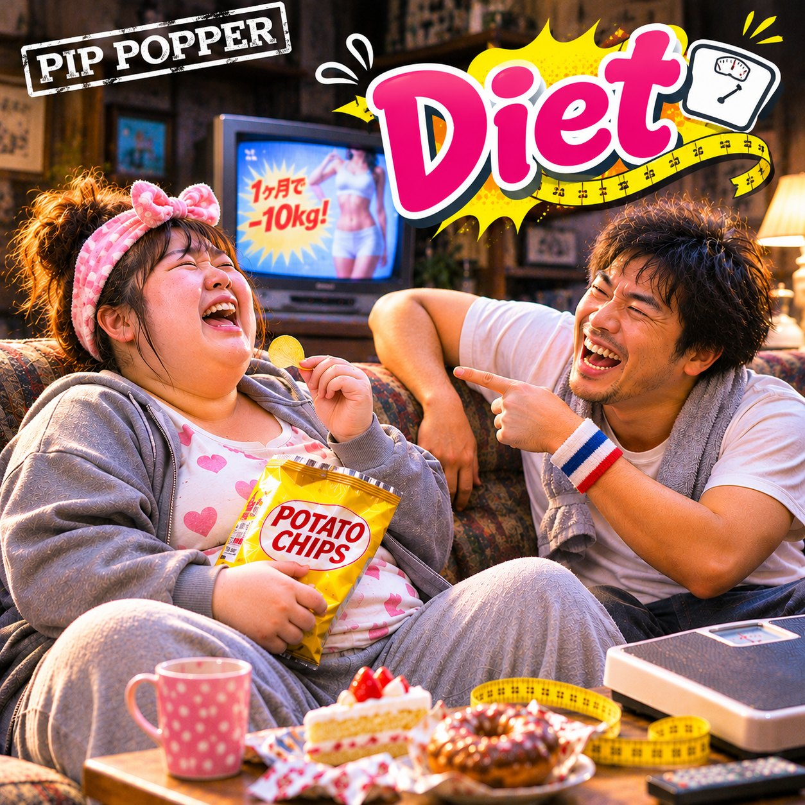

Diet

AI ImpressionAIの感想
「ダイエットは明日から」と言い続ける彼女と、それを笑いながらツッコみ倒す彼氏。深夜のテレビショッピング、ポテトチップ、体重計の数字、そしてリバウンド。誰もが一度は身に覚えのある“痩せたいのに痩せられない”日常を、軽快なラップと容赦ないツッコミで描いた、明るくユーモラスな一曲。「戻りたいけど戻れない」と繰り返すサビには、笑いの中にほんの少しの切実さもにじむ。
Lyrics
戻りたいけど戻れない今より痩せていたあの頃に帰りたいけど帰れない体重が落ちてくれない
ブラウン管の向こう側効果は「1ヶ月で１0キロ痩せました」釘付け深夜のテレビショッピング体重計に乗ってショッキングそんなテレビ見ながらポテトチップ「もう痩せる」と言いながらゲップほとんど試したダイエット商品カロリー消費せず金だけ消費他力本願 辞めた方がいいぜヤセるのは諦めたほうが豚が子豚になったって誰も気付かねぇよ2キロヤセようがもう、言い訳はなんか聞きたかネェ！ ビークワイエット！ バナナくわえ顔ヤセダイエットが俺のお勧めそのままデブの世界に突き進め
戻りたいけど戻れないとても痩せていたあの頃に帰りたいけど帰れない同窓会には行けない
昔の写真眺めて観察今と見比べて気分は複雑「最近、私、太ったなぁ」って おまえの最近は何年前だ？10年前か？20年前か？ お前の晩飯 それで1人前か？ニュースは見らんけど番組欄気になる番組！ダイエット特集 毎週あるある大辞典見た時点で痩せると信じて夢見るスリムなボディーをゲットインターネット通販セットで買いだめ己と決闘母ちゃん見てもデブ家系の血統ケーキに葛藤誘惑に勝てねぇ今までの努力がリセット
戻りたいけど戻れない今より痩せていたあの頃に帰りたいけど帰れない甘いもの我慢できない
成績、悪かった全教科 だけどダイエットにだけは勉強家必死にカロリー計算！計算間違いじゃねぇの？おねえさん ちょっと食べ過ぎてお腹痛い！って どんなダイエットしてんだ？いったい？ 「ダイエットは明日から」って延長戦糖尿抱えて輝く死兆星！重力で落ちた肉も下着で調整こけたって起き上がってまた挑戦浮き沈み気にせずに突き進み痩せた以上に増えるリバウンド痩せて戻って戻って戻ってダイエットのせいでもっと太って靴下履けない立ったまま胸よりでかい腹が邪魔
戻りたいけど戻れないとても痩せていたあの頃に帰りたいけど帰れない同窓会には行けない
戻りたいけど戻れない今より痩せていたあの頃に帰りたいけど帰れない体重が落ちてくれない